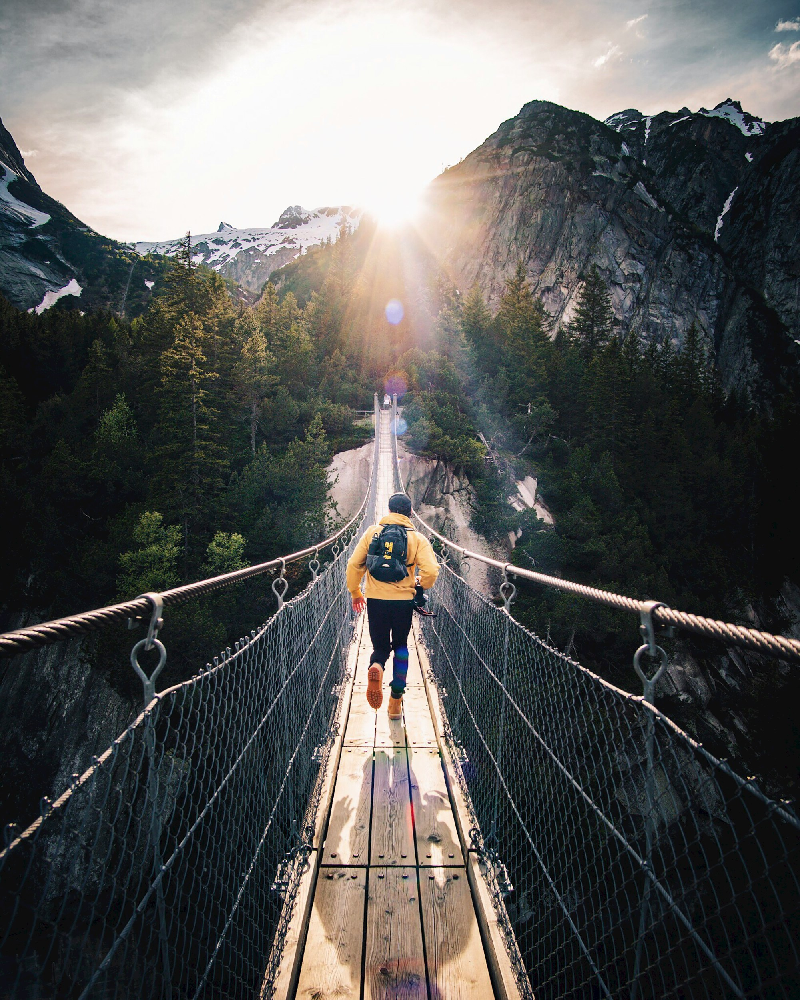

Destinations And More
Explore the beauty of our diverse destinations and discover more about each unique location on our Destinations and More page. From stunning landscapes to vibrant cityscapes, this page is your gateway to a world of travel inspiration. Dive into detailed guides, captivating stories, and essential travel tips for each destination, ensuring you have all the information needed to plan your next adventure. Whether you seek tranquil beaches, historical wonders, or bustling urban escapes, our Destinations and More page is designed to ignite your wanderlust and help you make informed travel decisions. Join us on a journey of discovery as we unveil the charm and allure of each destination, inviting you to dream, plan, and embark on unforgettable experiences.
Explore different locations

Egypt
Journey to Egypt, where ancient wonders and vibrant culture converge.

Scotland
Explore Scotland's timeless landscapes and historic charm, where every vista tells a captivating tale.

Japan
Discover Japan's seamless blend of tradition and innovation. From cherry blossoms to vibrant cities
Food and Accommodation
Asian Cuisine

Savor the soul-warming delight of Pho, Vietnam's iconic noodle soup. Immerse yourself in the fragrant broth, delicate rice noodles, and tender slices of beef or chicken. A culinary symphony of flavors, Pho is a comforting journey through Vietnamese culinary craftsmanship.
Where to best eat? Down the river by the monuments.
Boutique Hotels

Indulge in the intimate luxury of boutique hotels, where personalized experiences and distinctive charm redefine your stay. From stylish decor to attentive service, each boutique hotel offers a unique escape, capturing the essence of its locale. Immerse yourself in refined comfort and curated elegance, making every stay a memorable journey.
Where to find one? Your local trip advisor